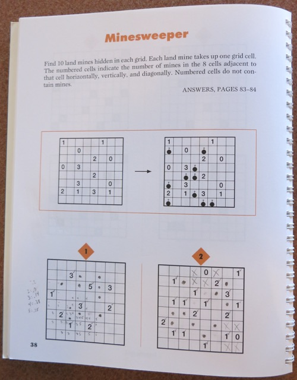

Minesweeper Helper
| Mines placed: | |
| Criteria satisfied: | |
| Finished: |
What’s All This, Then?
Some years back I acquired the book Mensa Challenge Your Brain Math & Logic Puzzles. Recently I started working out these Minesweeper puzzles by hand, on paper. After a lot of marking and erasing, I decided to create a tool that I could use to explore possible solutions without having to remember or mark a lot of state. (Perhaps if I were smarter, the answers would simply reveal themselves to me, without any messing around.) At the moment this program always shows Puzzle 6 from the book, but we’ll see where it goes from here.
Here is the source code.